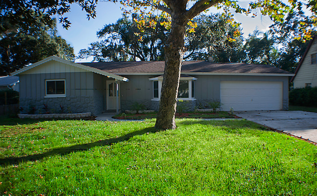

Our Mission
"To provide a safe, a home-like environment with consistent excellent quality care to the aging population, as well a rewarding and pleasant environment for employeses."
Our Vision
"To make a positive recognizable difference to the lives of many senior citizens, through the provision of long-term assisted living which is rewarding and beneficial to our residents and whose loved ones will be confident and assured that their senior relatives are receiving quality care in a loving and safe environment."
HOW CAN WE HELP YOU?
Finding the best home care service provider can be overwhelming, but you've come to the right place. Learn more about our services and what might be right for you.

Services We Provide
Home health welcome, in home podiatry, medication monitoring, immediate admissions, daily housekeeping services, emergency response, hospice services welcome, Day Care, Respite Care
About Us
S & R Assisted Living Facility, LLC, is licensed to operate in
Brandon, Hillsborough County, Florida. We provide a homelike
environment for the aged who can no longer perform the necessary
daily activites on their own.

Facility
Clean, spacious, comfortable and relaxing. We provide 24 hour
assistance, 3 meals a day (with snacks in between) and a caring
staff.
.jpg)
.jpg)